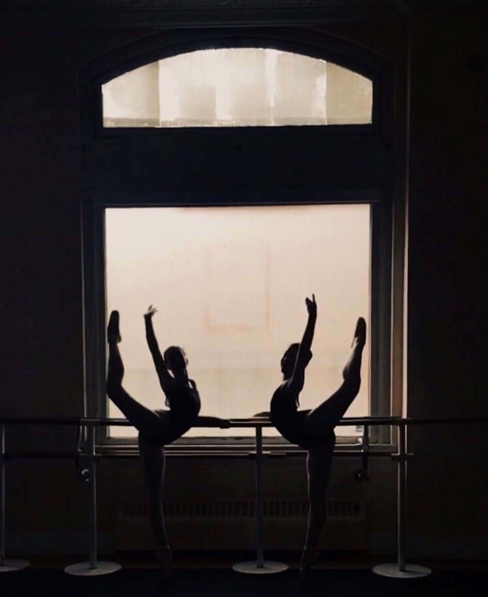
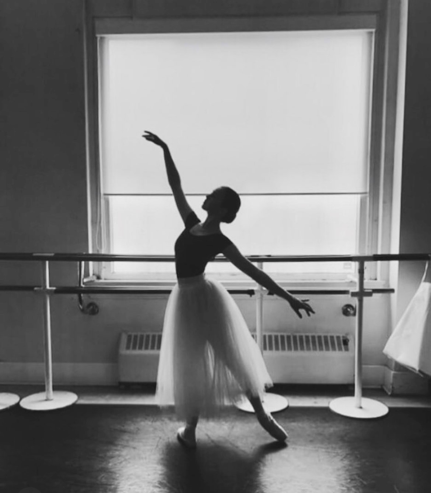
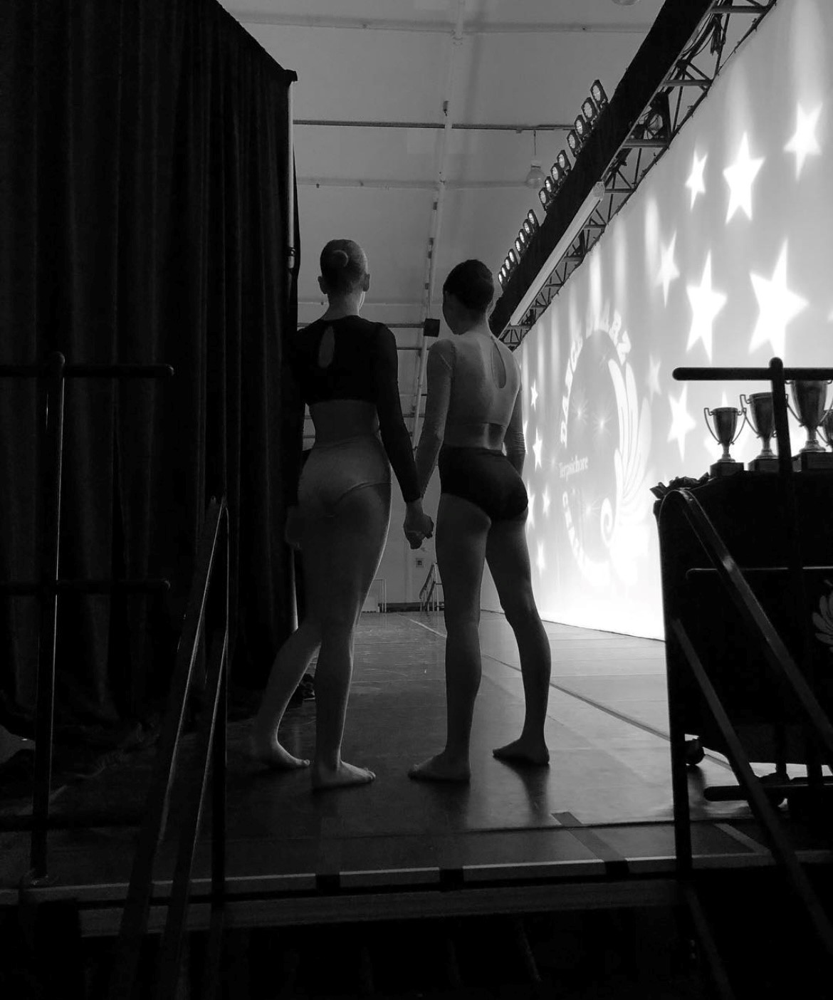

Our Mission
Our mission is to foster the CREATIVITY and CONFIDENCE of our students, by focusing on each students unique ability. Guiding their productivity to become thoughtful individuals, both within the studio and outside of studio walls. We recognize that each student that walks through our doors is unique. We ensure that every student feels valued and are treated with equal respect, with all dancers receiving the same quality instruction.
About Me
Hello my name is Isabella Miranda and I am 21 years old. I am the owner of Bellas Santosha Studio. It is with great excitement that I get to open up a studio that is both inclusive to children and adults with all kinds of different movement levels. I have had the honor of being trained by some of the best dance academies that are available. I have trained with Royal Winnipeg Ballet, Alberta Ballet, Canada's National Ballet, Arts Umbrella Ballet, Arts Umbrella Contemporary BC Ballet, New York City Ballet, San Francisco Ballet, Sydney National Ballet. I have taught ballet in Mexico at the Pointé Dance Academy, Ballet Folklórico de México, Academia de Ballet Diana Alanís taught summer intensives for Joffrey Ballet in Guadalajara and master classes for York University. I have received my yoga training from Yoga Nation, and my pilates training from Stott Pilates. I am honored to open my studio doors to the public. I am thrilled to be providing unique movement and dance opportunities to the community.
Contribution to the Community
It is with great pleasure that I will be opening my studio in Vilna Alberta. I hope that my studio is a place where all feel welcomed to attend. Bella Santosha Studio will be an active establishment in the community. To the farmers who live in the surrounding areas you will be given a free movement class once a month. To the farmers who do business with Mirabella Feed & seed Both you and your partner will receive a free movement class a week. Santosha Studio will be hiring extra High school Diploma Exam Tutors for the community on a donation based system from the participants. Santosha Studio will be hosting English/Spanish classes twice a month for individuals who would like to improve their communication skills, and these classes will be free and only require you to sign up. The students will showcase their routines to the nursing home of Vilna for a winter gala.
